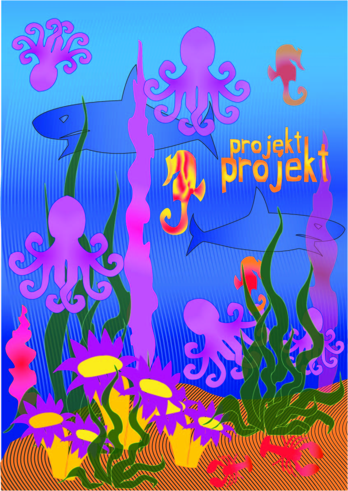
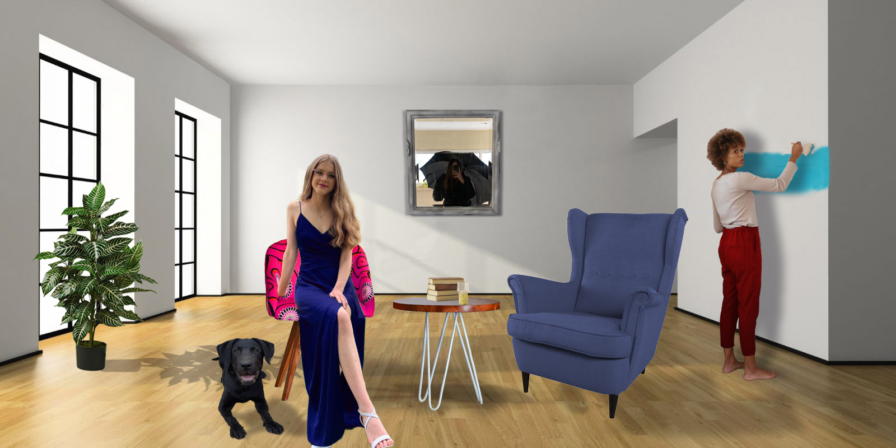

U prvom projektnom zadatku sklopili smo sve naučene elemente iz Adobe Illustratora u jedan rad, a tema je bila 'Flora i fauna podmorja'. Koristili smo gradijent, Beizerove krivulje, novi font i uz pomoć svih naučenih elemenata uradili zadatak.
U drugom projektnom zadatku smo također spojili sve elemente koje smo koristili za piksel grafiku, uključujući koloriranje, retuširanje, rezanje i uklapanje svega u jednu logičnu cjelinu.
